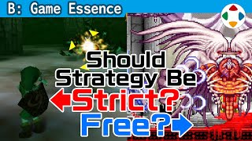
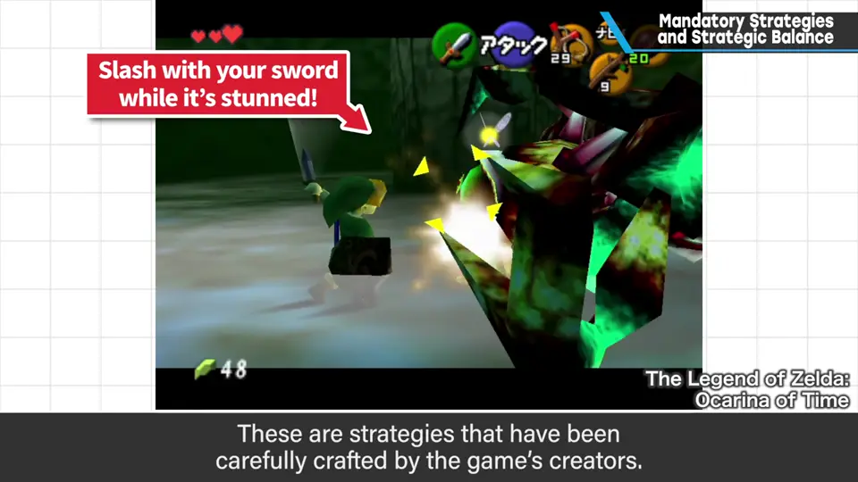
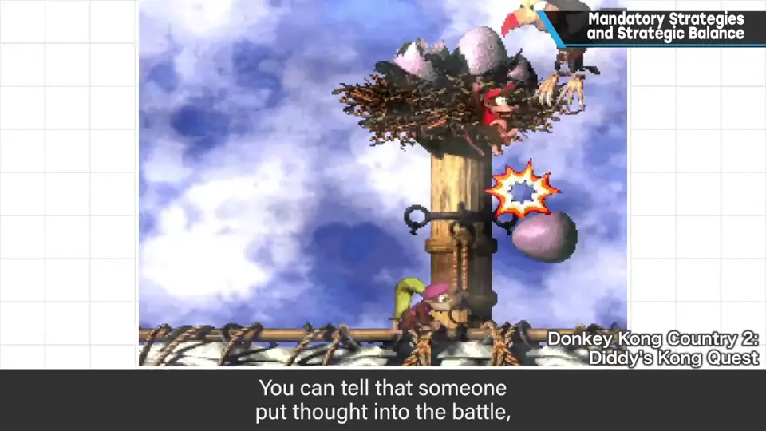
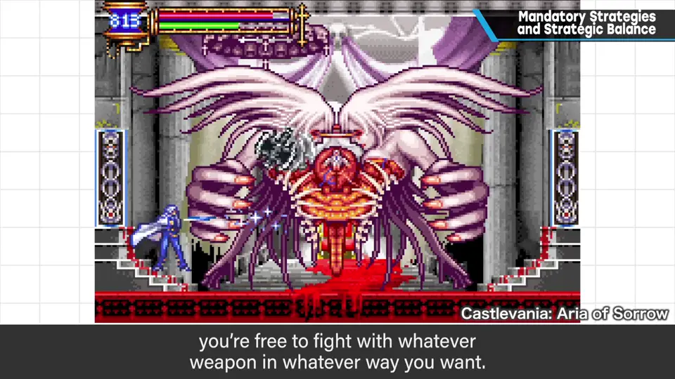
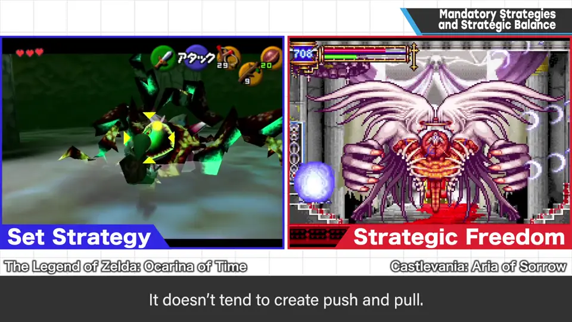
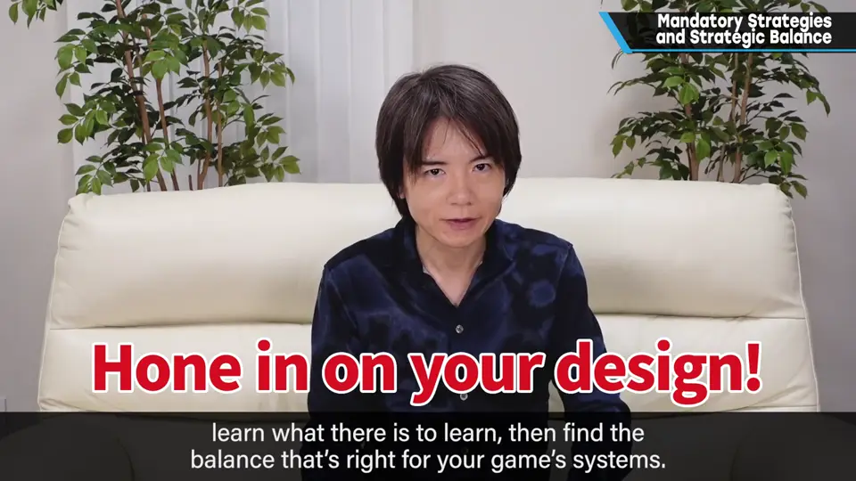
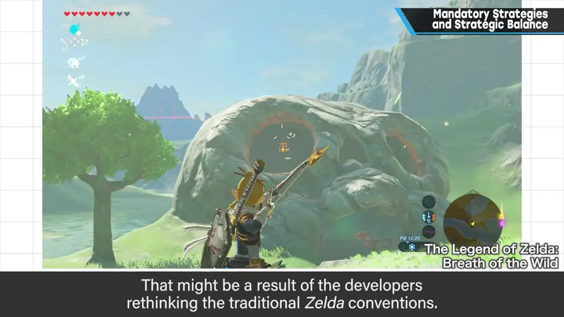

速览
尤其在任天堂作品中，Boss 等的攻略方法常常非常明确：在特定时机射击眼睛，趁敌人眩晕时用剑砍——这是制作者精心铺设的攻略路径。但作为玩家的樱井更喜欢自由发挥：攻略有强制感就像教程。精心设计的攻略能让人感到花了心思，也是让很多人接受的秘诀之一，但他个人不太想被游戏指挥「这样做、那样做」——不过那也是游戏的正确形态之一。《恶魔城》系列等用什么武器、怎么攻略都自由，玩家有多少就有多少种攻略；只是相比人为设计的攻略，它会偏粗糙、不易产生博弈——这同样是正确形态。有明确的攻略方法、经过试错找出来再击破，是游戏；从多样的武器中找自己擅长或对敌人有效的来击破，也是游戏。没有哪个是正确答案，但需要确定方向：不是单纯参考某款游戏来企划，而是学习可学之处，再配合自己游戏的系统取得平衡。顺带一提，《塞尔达传说 旷野之息》中「只有这一招」的强制攻略似乎很少——也许这也是重新审视塞尔达「理所当然」的结果。
1. 固定攻略：精心设计，但有强制感 0:04
尤其在任天堂作品中，Boss 等的攻略方法常常非常明确：在特定时机射击眼睛，趁敌人眩晕时用剑砍——这是制作者精心制作的攻略路径。


但作为玩家的樱井更喜欢让他自由发挥：攻略有强制感，就像教程。这样做能让人感受到花了心思，也是被许多人接受的秘诀之一；但他个人不太想被游戏指挥「这样做、那样做」。不过，这也是游戏的正确形态之一。
2. 自由攻略：多样，但偏粗糙 0:47
《恶魔城》系列等，用什么武器、怎么攻略都自由，玩家有多少，攻略就有多少。
但与人为设计的攻略相比，它会偏粗糙，不易产生博弈——这同样是游戏的正确形态。


| 类型 | 乐趣 | 代价 |
|---|---|---|
| 固定攻略 | 有明确的攻略方法，经过试错找到并击破 | 强制感、像教程 |
| 自由攻略 | 从多样武器中找自己擅长或对敌有效的来击破 | 偏粗糙，不易产生博弈 |
3. 确定方向，配合系统 1:21


顺带一提，《塞尔达传说 旷野之息》中「只有这一招」的强制攻略似乎很少。也许这也是重新审视塞尔达「理所当然」的结果。
自测题
1. 樱井个人为什么不太喜欢「固定攻略」？他认为它错了吗？
有强制感、像教程，他不想被游戏指挥这样那样；但他认为这也是游戏的正确形态之一（能感到用心，也是被多数人接受的秘诀）。 0:25
2. 自由攻略（如《恶魔城》）的代价是什么？
与人为设计的攻略相比偏粗糙，不易产生博弈。 1:00
3. 樱井的结论是什么？
两者没有对错，但要确定方向：学习可学之处，配合自己游戏的系统取平衡，而不是单纯参考某款游戏。 1:21